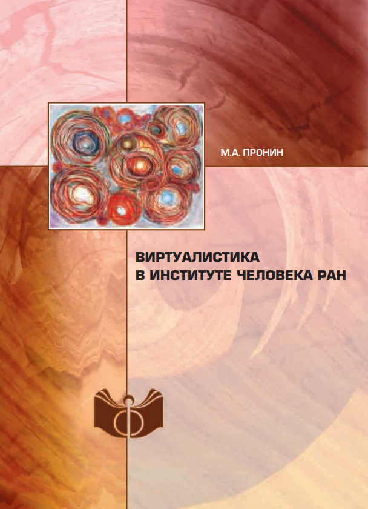

Конспект
Введение
Почти с самого начала своего существования человек задумывался о своих фантазиях и сновидениях. Таким образом, в нем появилось желание творить свои иные реальности, называемые виртуальными. Этому и посвящена данная лекция.
Сюрреализм уничтожит противоречие между мечтой и действительностью и создаст некую абсолютную реальность - сверхреальность. © Андре Бретон.
- Симулякр
- «Копия», не имеющая оригинала в реальности. Иными словами, знак, не имеющий означаемого объекта в реальности.
«Искушение святого Антония».
Здесь находятся реальный стул, символизирующий объективную реальность, фотография этого же стула - его симулякр и копия словарной статьи "стул", ещё один симулякр.
Полезные ресурсы:
Вируалистика и определение виртуальной реальности.
Представители Российской школы виртуалистики написали "Манифест виртуалистики", в котором провозгласили, что виртуальная реальность также истина, как и объективная реальность ее породившая.
По мнению представителей школы виртуалистики результатами процесса виртуализации являются киберпространство и медиапространство.
Мироздание можно образно представить как матрёшку: порожденные и порождающие реальности находятся друг в друге, это называется "принцип матрёшки".
Принцип матрёшки хорошо прослеживается в фильме «Начало» режиссёра Кристофера Нолана.
Алексей Владимирович Юхвид разработал технологический подход, согласно которому существует виртус - творческая сила личности. А виртуальная реальность - это такая реальность, которая получает жизнь благодаря виртусу и имеет его в своей основе.
В рамках своего подхода учёный выделил три вида виртуальных технологий:
- Высшие
- Естественные
- Искусственные
К высшим виртуальным технологиям относятся дух и душа человека. Они позволяют человеку быть причастным к миру духовных и моральных ценностей
К естественным виртуальным технологиям относятся мозг и пять органов чувств. С их помощью человек способен погружаться в интеллектуальную и физическую реальности, воспринимать и познавать их.
Искусственные виртуальные технологии созданы человеком по образу и подобию высших и естественных виртуальных технологий. К ним можно отнести различные искусства, литературу, СМИ, компьютерные виртуальные технологии и другие. Они делают человека причастным к искусственной реальности.
Компьютерная виртуальная реальность, по мнению Алексея Владимировича Юхвида — это интерактивная среда, созданная с помощью компьютера,имеющая графические, акустические, пластические и иные свойства, в которую пользователь погружается как зритель или творец.
Полезные ресурсы:
